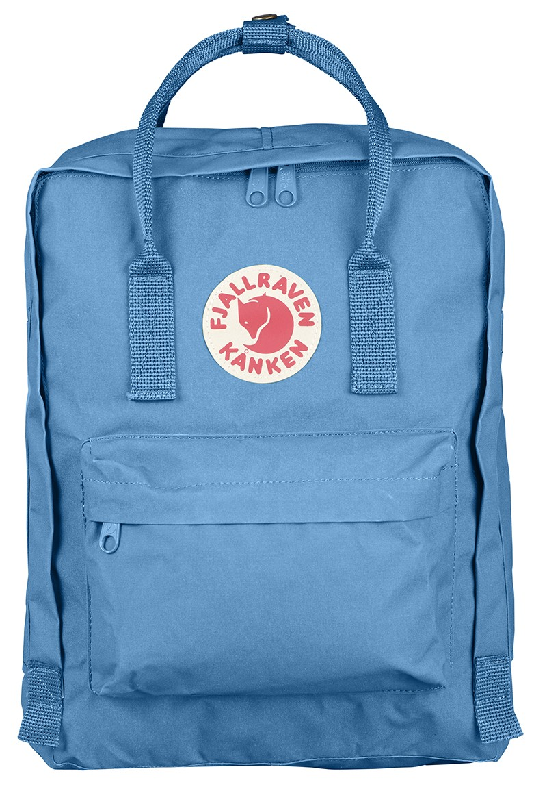

Details

BLUE
Size |
Price |
60cm x 30cm |
IDR 2.500.000 |
Dibuat dengan bahan dasar Vynilon tahan banting, ringan dan kuat. Lengkap dengan 2 buah kantong samping dan satu kantong depan berseleting. Tas ini memberikan ruang penyimpanan luas yang mampu memuat berbagi barang bawaan. Ransel ini juga dilengkapi dengan seating pad yang dapat dilepas pasang.